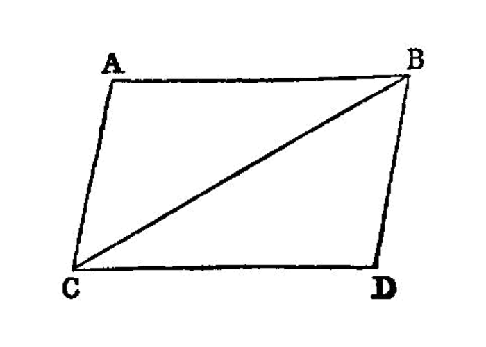

parallelogram angles
I.34
In parallelogrammic areas [1] the opposite sides and angles are equal to one another, and the diameter bisects the areas.
—Euclid
{kind=link}
Let ACDB be a parallelogrammic area, and BC its diameter; I say that the opposite sides and angles of the parallelogram ACDB are equal to one another, and the diameter BC bisects it.
For, since AB is parallel to CD, and the straight line BC has fallen upon them,
the alternate angles ABC, BCD are equal to one another. [I.29]
Again, since AC is parallel to BD, and BC has fallen upon them,
the alternate angles ACB, CBD are equal to one another. [I.29]
Therefore ABC, DCB`[2]_ are two triangles having the two angles `ABC, BCA equal to the two angles DCB, CBD respectively, and one side equal to one side, namely that adjoining the equal angles and common to both of them, BC;
therefore they will also have the remaining sides equal to the remaining sides respectively, and the remaining angle to the remaining angle; [I.26] therefore the side AB is equal to CD, and AC to BD,
and further the angle BAC is equal to the angle CDB.
And, since the angle ABC is equal to the angle BCD,
and the angle CBD to the angle ACB, the whole angle ABD is equal to the whole angle ACD. [I.c.n.2]
And the angle BAC was also proved equal to the angle CDB.
Therefore in parallelogrammic areas the opposite sides and angles are equal to one another.
I say, next, that the diameter also bisects the areas.
For, since AB is equal to CD, and BC is common, the two sides AB, BC are equal to the two sides DC, CB respectively;
and the angle ABC is equal to the angle BCD; therefore the base AC is also equal to DB, and the triangle ABC is equal to the triangle DCB. [I.4]
Therefore the diameter BC bisects the parallelogram ACDB.
references
[I.4]: /elem.1.4 “Book 1 - Proposition 4” [I.26]: /elem.1.26 “Book 1 - Proposition 26” [I.29]: /elem.1.29 “Book 1 - Proposition 29” [I.c.n.2]: /elem.1.c.n.2 “Book 1 - Common Notion 2”